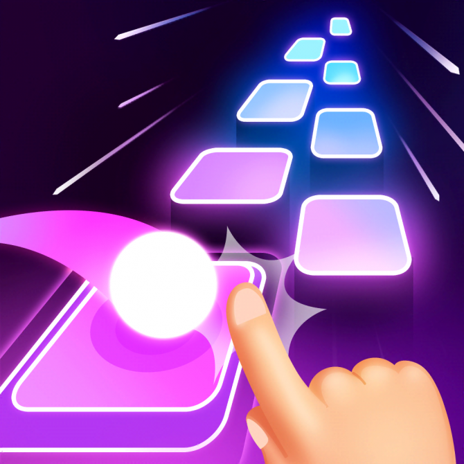

6. Pick a game, make a brief proposal for a new game to compete directly with the game you
picked.
Initially, my idea was to use Piano Tiles 2 to fight Magic Tiles when both have nearly the same
playing mechanism and come from 2 different publishers. This will create a more intuitive view
when making comparisons with other businesses. However, the request includes the appearance of
the adj "new". In my personal opinion, with the continuous development of the gaming industry,
the game Piano Tiles 2 is not suitable for this case. I decided to choose Tiles Hop against Duet
Cats, knowing both were Amanotes products, but this could be a good battle. Tiles Hop and Duet
Cats are both games in the music and rhythm game genre, but there are some differences between
them. Below is the comparison I made between the two games:

Field
The player controls the ball to jump over the tiles to the beat of the music. The
gameplay is simple and addictive, focusing on the synchronization between the
player's actions and the beat of the music.
Play style
The player controls two cats to catch food falling from above to create musical
beats. Duet's gameplay is also simple, adorable, and synchronized with the music.
Provides diverse music from many different genres, but mainly trending and influential
young music.
Music
Provides background music from attractive songs and remixes them through cat covers.
Has simple but special graphics. The neon lights in the game and animation effects
remind me of "80s neon synthwave" images.
Graphics and Design
Uses graphics designed in a "cute and simple" style. This design creates a fun and
adorable feeling for players.
There are no difficulty levels, players can conquer the song then play its infinity
version and try to achieve the highest record.
Game Modes and Challenges
Does not provide difficulty, the game brings a sense of relaxation by letting players
just play and complete the song and earn coins to decorate the game as desired.
Choosing between "Tiles Hop" and "Duet Cats" depends on personal preference and player profile.
Each game offers a unique and fun experience in the music and rhythm game genre. For me, I would
favor Tiles Hop because of my love for "80s neon synthwave" art and my taste in music (I love
original music more than cute remixed music).

.png)